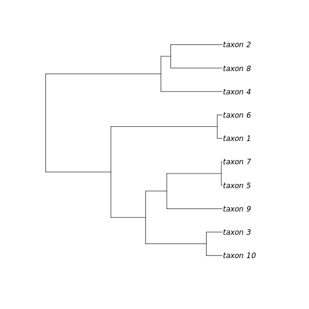

A Brief Introduction to RNeXML
Carl Boettiger
Scott Chamberlain
Rutger Vos
Hilmar Lapp
Source:vignettes/intro.Rmd
intro.RmdRead in a nexml file:
f <- system.file("examples", "comp_analysis.xml", package="RNeXML")
nexml <- nexml_read(f)Pretty-print an overview of the components and metadata that make up the nexml object:
nexml # this is the same as show(nexml)## A nexml object representing:
## 1 phylogenetic tree block(s), where:
## block 1 contains 1 phylogenetic tree(s)
## 2 character block(s), where:
## block 1 defines 1 continuous character(s)
## matrix 1 has 10 row(s)
## block 2 defines 1 standard/discrete character(s), with 2 states each
## and 0 polymorphic or uncertain state(s) defined
## matrix 2 has 10 row(s)
## 10 taxonomic units in 1 block(s)
## Taxa: taxon_1, taxon_2, taxon_3, taxon_4, taxon_5, taxon_6 ...
## Metadata annotations:
## 2 at top level
## 0 in block 1 at otu level
## 0 in block 1 at char level
## 0 in block 2 at char level
## 0 in block 1 at state level
## 0 in block 2 at state level
##
## Author(s): rvosa
##
## NeXML generated by Bio::Phylo::Project v.0.56 using schema version: 0.9
## Size: 289.3 KbCreate a summary object of various component and metadata counts (the show() method uses this):
summary(nexml)## $nblocks
## trees otus characters
## 1 1 2
##
## $ncharacters
## block.1 block.2
## 1 1
##
## $nstates
## block.1 block.2
## Min. NA 2
## 1st Qu. NA 2
## Median NA 2
## Mean NA 2
## 3rd Qu. NA 2
## Max. NA 2
##
## $nnonstdstatedefs
## polymorphic uncertain
## block.1 NA NA
## block.2 0 0
##
## $nmatrixrows
## block.1 block.2
## 10 10
##
## $ntrees
## block.1
## 1
##
## $notus
## block.1
## 10
##
## $nmeta
## $nmeta$nexml
## [1] 2
##
## $nmeta$otu
## block.1
## 0
##
## $nmeta$char
## block.1 block.2
## 0 0
##
## $nmeta$state
## block.1 block.2
## 0 0Extract trees from nexml into the ape::phylo format:

plot of chunk unnamed-chunk-5
Write an ape::phylo tree into the nexml format:
data(bird.orders)
nexml_write(bird.orders, "test.xml", creator = "Carl Boettiger")## [1] "test.xml"A key feature of NeXML is the ability to formally validate the construction of the data file against the standard (the lack of such a feature in nexus files had lead to inconsistencies across different software platforms, and some files that cannot be read at all). While it is difficult to make an invalid NeXML file from RNeXML, it never hurts to validate just to be sure:
nexml_validate("test.xml")## [1] TRUEExtract metadata from the NeXML file:
birds <- nexml_read("test.xml")
get_taxa(birds)## otu label xsi.type otus
## 1 ou37 Struthioniformes NA os3
## 2 ou38 Tinamiformes NA os3
## 3 ou39 Craciformes NA os3
## 4 ou40 Galliformes NA os3
## 5 ou41 Anseriformes NA os3
## 6 ou42 Turniciformes NA os3
## 7 ou43 Piciformes NA os3
## 8 ou44 Galbuliformes NA os3
## 9 ou45 Bucerotiformes NA os3
## 10 ou46 Upupiformes NA os3
## 11 ou47 Trogoniformes NA os3
## 12 ou48 Coraciiformes NA os3
## 13 ou49 Coliiformes NA os3
## 14 ou50 Cuculiformes NA os3
## 15 ou51 Psittaciformes NA os3
## 16 ou52 Apodiformes NA os3
## 17 ou53 Trochiliformes NA os3
## 18 ou54 Musophagiformes NA os3
## 19 ou55 Strigiformes NA os3
## 20 ou56 Columbiformes NA os3
## 21 ou57 Gruiformes NA os3
## 22 ou58 Ciconiiformes NA os3
## 23 ou59 Passeriformes NA os3
get_metadata(birds) ## property datatype content xsi.type href Meta
## 1 dc:creator xsd:string Carl Boettiger LiteralMeta <NA> m278
## 2 dcterms:modified xsd:string 2020-01-28 23:24:19 GMT LiteralMeta <NA> m279
## 3 cc:license <NA> <NA> ResourceMeta http://creativecommons.org/publicdomain/zero/1.0/ m280Add basic additional metadata:
nexml_write(bird.orders, file="meta_example.xml",
title = "My test title",
description = "A description of my test",
creator = "Carl Boettiger <cboettig@gmail.com>",
publisher = "unpublished data",
pubdate = "2012-04-01")## [1] "meta_example.xml"By default, RNeXML adds certain metadata, including the NCBI taxon id numbers for all named taxa. This acts a check on the spelling and definitions of the taxa as well as providing a link to additional metadata about each taxonomic unit described in the dataset.
Advanced annotation
We can also add arbitrary metadata to a NeXML tree by define meta objects:
modified <- meta(property = "prism:modificationDate",
content = "2013-10-04")Advanced use requires specifying the namespace used. Metadata follows the RDFa conventions. Here we indicate the modification date using the prism vocabulary. This namespace is included by default, as it is used for some of the basic metadata shown in the previous example. We can see from this list:
RNeXML:::nexml_namespaces## nex xsi
## "http://www.nexml.org/2009" "http://www.w3.org/2001/XMLSchema-instance"
## xml cdao
## "http://www.w3.org/XML/1998/namespace" "http://purl.obolibrary.org/obo/"
## xsd dc
## "http://www.w3.org/2001/XMLSchema#" "http://purl.org/dc/elements/1.1/"
## dcterms prism
## "http://purl.org/dc/terms/" "http://prismstandard.org/namespaces/1.2/basic/"
## cc ncbi
## "http://creativecommons.org/ns#" "http://www.ncbi.nlm.nih.gov/taxonomy#"
## tc
## "http://rs.tdwg.org/ontology/voc/TaxonConcept#"This next block defines a resource (link), described by the rel attribute as a homepage, a term in the foaf vocabulary. Because foaf is not a default namespace, we will have to provide its URL in the full definition below.
website <- meta(href = "http://carlboettiger.info",
rel = "foaf:homepage")Here we create a history node using the skos namespace. We can also add id values to any metadata element to make the element easier to reference externally:
history <- meta(property = "skos:historyNote",
content = "Mapped from the bird.orders data in the ape package using RNeXML",
id = "meta123")For this kind of richer annotation, it is best to build up our NeXML object sequentially. First we will add bird.orders phylogeny to a new phylogenetic object, and then we will add the metadata elements created above to this object. Finally, we will write the object out as an XML file:
birds <- add_trees(bird.orders)
birds <- add_meta(meta = list(history, modified, website),
namespaces = c(skos = "http://www.w3.org/2004/02/skos/core#",
foaf = "http://xmlns.com/foaf/0.1/"),
nexml=birds)
nexml_write(birds,
file = "example.xml")## [1] "example.xml"Taxonomic identifiers
Add taxonomic identifier metadata to the OTU elements:
nex <- add_trees(bird.orders)
nex <- taxize_nexml(nex)Working with character data
NeXML also provides a standard exchange format for handling character data. The R platform is particularly popular in the context of phylogenetic comparative methods, which consider both a given phylogeny and a set of traits. NeXML provides an ideal tool for handling this metadata.
Extracting character data
We can load the library, parse the NeXML file and extract both the characters and the phylogeny.
library(RNeXML)
nexml <- read.nexml(system.file("examples", "comp_analysis.xml", package="RNeXML"))
traits <- get_characters(nexml)
tree <- get_trees(nexml)(Note that get_characters would return both discrete and continuous characters together in the same data.frame, but we use get_characters_list to get separate data.frames for the continuous characters block and the discrete characters block).
We can then fire up geiger and fit, say, a Brownian motion model the continuous data and a Markov transition matrix to the discrete states:
library(geiger)
fitContinuous(tree, traits[1], ncores=1)
fitDiscrete(tree, traits[2], ncores=1)